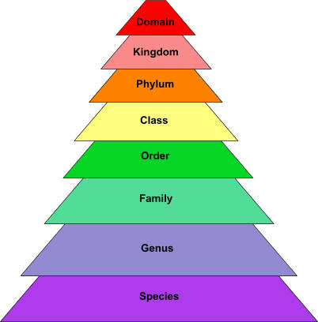

Biologists group living organisms according to their similarities and differences. This is called classification.
Biologists in general recognise five different kingdoms of living organisms - Prokaryotae, Protoctista, Fungi, Plantae and Animalia.

Carolus Linneaeus, in 1753, used Latin to give two names to each organism. This procedure of naming is called binomial system. The first name indicates its genus and the second name is its species.